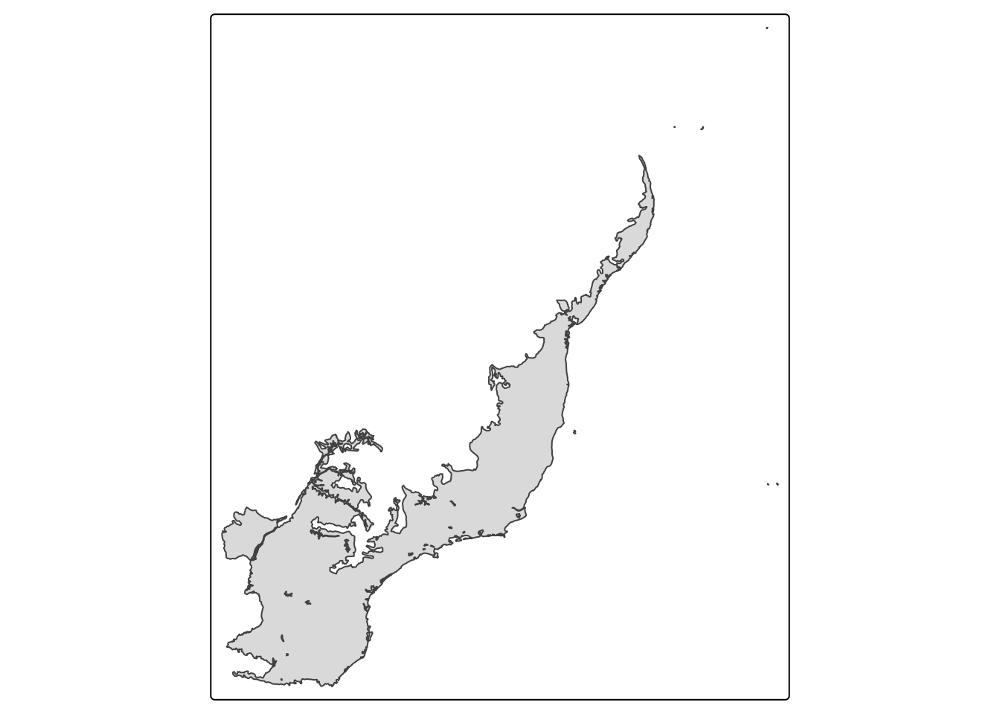
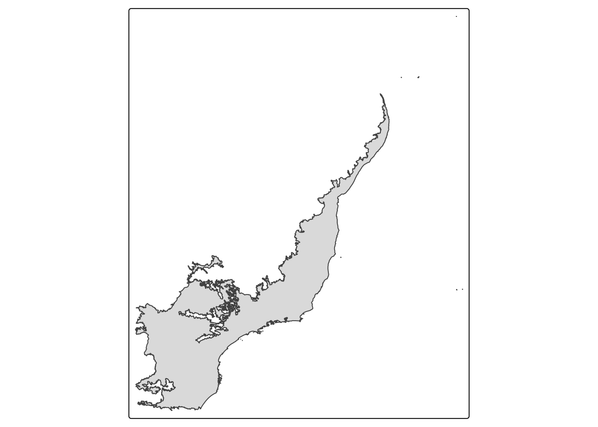
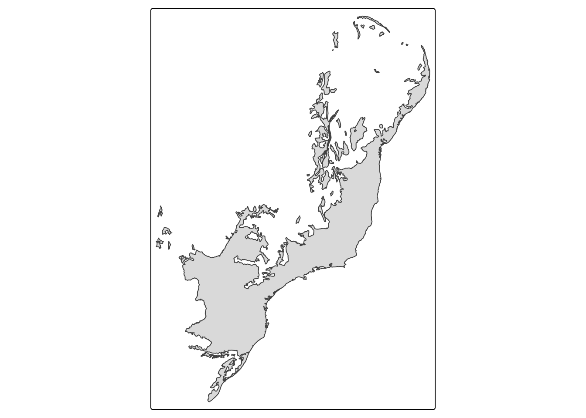
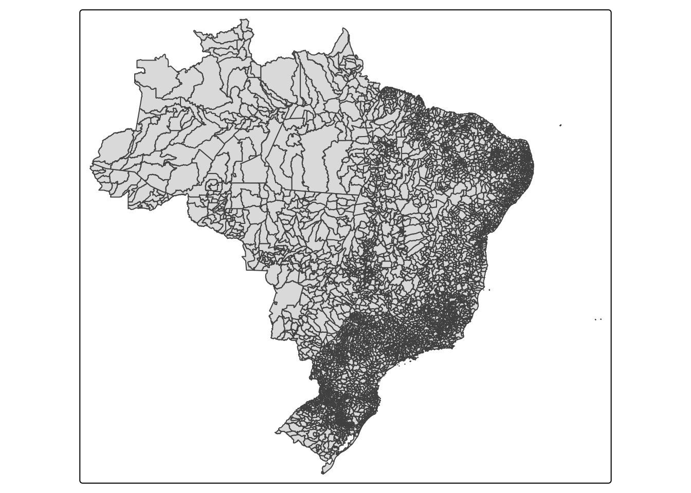
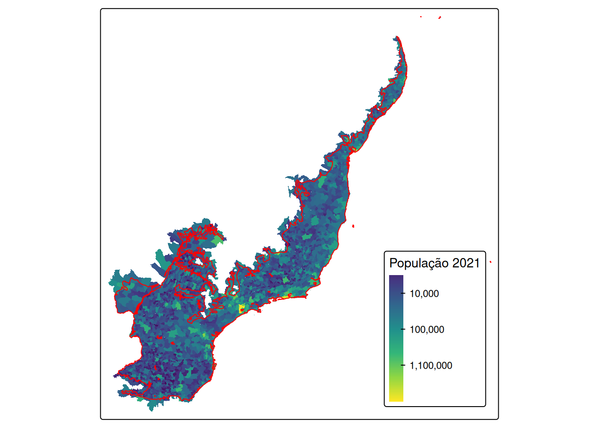
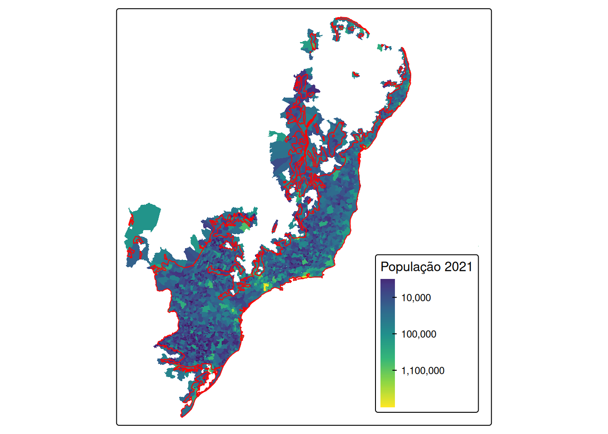

# prepare r ---------------------------------------------------------------
# packages
library(tidyverse)── Attaching core tidyverse packages ──────────────────────── tidyverse 2.0.0 ──
✔ dplyr 1.2.1 ✔ readr 2.2.0
✔ forcats 1.0.1 ✔ stringr 1.6.0
✔ ggplot2 4.0.3 ✔ tibble 3.3.1
✔ lubridate 1.9.5 ✔ tidyr 1.3.2
✔ purrr 1.2.2
── Conflicts ────────────────────────────────────────── tidyverse_conflicts() ──
✖ dplyr::filter() masks stats::filter()
✖ dplyr::lag() masks stats::lag()
ℹ Use the conflicted package (<http://conflicted.r-lib.org/>) to force all conflicts to become errorslibrary(sf)Linking to GEOS 3.12.2, GDAL 3.11.4, PROJ 9.4.1; sf_use_s2() is TRUElibrary(geobr)
library(brpop) # remotes::install_github("rfsaldanha/brpop")
library(atlanticr) # remotes::install_github("mauriciovancine/atlanticr")Loading required package: magrittr
Attaching package: 'magrittr'
The following object is masked from 'package:purrr':
set_names
The following object is masked from 'package:tidyr':
extractlibrary(tmap)
# options
options(timeout = 1e5)
# download data -----------------------------------------------------------
## mata atlantica ----
mata_atlantica_2004 <- geobr::read_biomes(year = 2004) %>%
dplyr::filter(name_biome == "Mata Atlântica")Using year/date 2004mata_atlantica_2004Simple feature collection with 1 feature and 4 fields
Geometry type: MULTIPOLYGON
Dimension: XY
Bounding box: xmin: -55.6635 ymin: -29.9515 xmax: -28.8405 ymax: 0.8254
Geodetic CRS: SIRGAS 2000
code_biome name_biome ID1 year geom
1 MAT Mata Atlântica 6 2004 MULTIPOLYGON (((-29.3661 0....tm_shape(mata_atlantica_2004) +
tm_polygons()
mata_atlantica_2019 <- geobr::read_biomes(year = 2019) %>%
dplyr::filter(name_biome == "Mata Atlântica")Using year/date 2019mata_atlantica_2019Simple feature collection with 1 feature and 3 fields
Geometry type: MULTIPOLYGON
Dimension: XY
Bounding box: xmin: -55.33475 ymin: -29.98127 xmax: -28.84785 ymax: 0.9178799
Geodetic CRS: SIRGAS 2000
name_biome code_biome year geom
1 Mata Atlântica 4 2019 MULTIPOLYGON (((-48.70814 -...tm_shape(mata_atlantica_2019) +
tm_polygons()
mata_atlantica_2006 <- sf::st_read("https://github.com/mauriciovancine/atlantic-forest-limits/raw/refs/heads/main/atlantic_forest_limit_law_2006/atlantic_forest_limit_law_2006_limit.gpkg") %>%
sf::st_transform(sf::st_crs(mata_atlantica_2019))Reading layer `atlantic_forest_limit_law_2006_limit' from data source
`https://github.com/mauriciovancine/atlantic-forest-limits/raw/refs/heads/main/atlantic_forest_limit_law_2006/atlantic_forest_limit_law_2006_limit.gpkg'
using driver `GPKG'
Simple feature collection with 1 feature and 6 fields
Geometry type: MULTIPOLYGON
Dimension: XY
Bounding box: xmin: -57.89255 ymin: -33.75435 xmax: -34.82286 ymax: -2.808325
Geodetic CRS: WGS 84mata_atlantica_2006Simple feature collection with 1 feature and 6 fields
Geometry type: MULTIPOLYGON
Dimension: XY
Bounding box: xmin: -57.89255 ymin: -33.75435 xmax: -34.82286 ymax: -2.808325
Geodetic CRS: SIRGAS 2000
OBJECTID LEG_1SIMP COUNT_ Shape_Leng Shape_Area area_km2
1 1 STN 1 108.2268 406.6346 406.6346
geom
1 MULTIPOLYGON (((-52.6231 -3...tm_shape(mata_atlantica_2006) +
tm_polygons()
## brasil ----
brasil_mun <- geobr::read_municipality(year = 2021) %>%
dplyr::mutate(code_muni = as.numeric(str_sub(as.character(code_muni), 1, 6)))Using year/date 2021brasil_munSimple feature collection with 5570 features and 7 fields
Geometry type: MULTIPOLYGON
Dimension: XY
Bounding box: xmin: -73.99045 ymin: -33.75118 xmax: -28.84784 ymax: 5.271841
Geodetic CRS: SIRGAS 2000
First 10 features:
code_muni name_muni code_state abbrev_state name_state
1 110001 Alta Floresta D'oeste 11 RO Rondônia
2 110002 Ariquemes 11 RO Rondônia
3 110003 Cabixi 11 RO Rondônia
4 110004 Cacoal 11 RO Rondônia
5 110005 Cerejeiras 11 RO Rondônia
6 110006 Colorado do Oeste 11 RO Rondônia
7 110007 Corumbiara 11 RO Rondônia
8 110008 Costa Marques 11 RO Rondônia
9 110009 Espigão D'oeste 11 RO Rondônia
10 110010 Guajará-Mirim 11 RO Rondônia
code_region name_region geom
1 1 Norte MULTIPOLYGON (((-62.19929 -...
2 1 Norte MULTIPOLYGON (((-62.53804 -...
3 1 Norte MULTIPOLYGON (((-60.37104 -...
4 1 Norte MULTIPOLYGON (((-61.00059 -...
5 1 Norte MULTIPOLYGON (((-61.50149 -...
6 1 Norte MULTIPOLYGON (((-60.5047 -1...
7 1 Norte MULTIPOLYGON (((-61.33671 -...
8 1 Norte MULTIPOLYGON (((-63.71924 -...
9 1 Norte MULTIPOLYGON (((-61.00059 -...
10 1 Norte MULTIPOLYGON (((-65.3815 -1...tm_shape(brasil_mun) +
tm_polygons()
## populacao brasil
brasil_pop <- brpop::mun_pop_totals(source = "datasus")Setting `max_tries = 2`.
Setting `max_tries = 2`.brasil_pop# A tibble: 123,112 × 3
code_muni year pop
<dbl> <dbl> <int>
1 110000 2000 0
2 110000 2001 0
3 110000 2002 0
4 110000 2003 0
5 110000 2004 0
6 110000 2005 0
7 110000 2006 0
8 110000 2007 0
9 110000 2008 0
10 110000 2009 0
# ℹ 123,102 more rowsbrasil_pop_wide <- brasil_pop %>%
dplyr::filter(year == 2021) %>%
dplyr::mutate(year = paste0("pop_", year)) %>%
tidyr::pivot_wider(id_cols = code_muni, names_from = year, values_from = "pop")
brasil_pop_wide# A tibble: 5,596 × 2
code_muni pop_2021
<dbl> <int>
1 110000 0
2 110001 22516
3 110002 111148
4 110003 5067
5 110004 86416
6 110005 16088
7 110006 15213
8 110007 7052
9 110008 19255
10 110009 33009
# ℹ 5,586 more rows## join ----
brasil_mun_pop <- dplyr::left_join(brasil_mun, brasil_pop_wide)Joining with `by = join_by(code_muni)`brasil_mun_popSimple feature collection with 5570 features and 8 fields
Geometry type: MULTIPOLYGON
Dimension: XY
Bounding box: xmin: -73.99045 ymin: -33.75118 xmax: -28.84784 ymax: 5.271841
Geodetic CRS: SIRGAS 2000
First 10 features:
code_muni name_muni code_state abbrev_state name_state
1 110001 Alta Floresta D'oeste 11 RO Rondônia
2 110002 Ariquemes 11 RO Rondônia
3 110003 Cabixi 11 RO Rondônia
4 110004 Cacoal 11 RO Rondônia
5 110005 Cerejeiras 11 RO Rondônia
6 110006 Colorado do Oeste 11 RO Rondônia
7 110007 Corumbiara 11 RO Rondônia
8 110008 Costa Marques 11 RO Rondônia
9 110009 Espigão D'oeste 11 RO Rondônia
10 110010 Guajará-Mirim 11 RO Rondônia
code_region name_region pop_2021 geom
1 1 Norte 22516 MULTIPOLYGON (((-62.19929 -...
2 1 Norte 111148 MULTIPOLYGON (((-62.53804 -...
3 1 Norte 5067 MULTIPOLYGON (((-60.37104 -...
4 1 Norte 86416 MULTIPOLYGON (((-61.00059 -...
5 1 Norte 16088 MULTIPOLYGON (((-61.50149 -...
6 1 Norte 15213 MULTIPOLYGON (((-60.5047 -1...
7 1 Norte 7052 MULTIPOLYGON (((-61.33671 -...
8 1 Norte 19255 MULTIPOLYGON (((-63.71924 -...
9 1 Norte 33009 MULTIPOLYGON (((-61.00059 -...
10 1 Norte 46930 MULTIPOLYGON (((-65.3815 -1...## filtrar municipios da mata atlantica ----
brasil_mun_pop_mata_atlantica_2004 <- brasil_mun_pop[mata_atlantica_2004, ]
brasil_mun_pop_mata_atlantica_2004Simple feature collection with 3015 features and 8 fields
Geometry type: MULTIPOLYGON
Dimension: XY
Bounding box: xmin: -56.11222 ymin: -30.67843 xmax: -28.84784 ymax: -3.804622
Geodetic CRS: SIRGAS 2000
First 10 features:
code_muni name_muni code_state abbrev_state name_state
1087 240120 Arês 24 RN Rio Grande do Norte
1089 240140 Baía Formosa 24 RN Rio Grande do Norte
1095 240180 Brejinho 24 RN Rio Grande do Norte
1100 240220 Canguaretama 24 RN Rio Grande do Norte
1104 240260 Ceará-Mirim 24 RN Rio Grande do Norte
1111 240325 Parnamirim 24 RN Rio Grande do Norte
1114 240350 Espírito Santo 24 RN Rio Grande do Norte
1115 240360 Extremoz 24 RN Rio Grande do Norte
1122 240420 Goianinha 24 RN Rio Grande do Norte
1143 240615 Jundiá 24 RN Rio Grande do Norte
code_region name_region pop_2021 geom
1087 2 Nordeste 14526 MULTIPOLYGON (((-35.14643 -...
1089 2 Nordeste 9373 MULTIPOLYGON (((-35.01963 -...
1095 2 Nordeste 12873 MULTIPOLYGON (((-35.34541 -...
1100 2 Nordeste 34814 MULTIPOLYGON (((-35.11633 -...
1104 2 Nordeste 74268 MULTIPOLYGON (((-35.41849 -...
1111 2 Nordeste 272490 MULTIPOLYGON (((-35.26446 -...
1114 2 Nordeste 10463 MULTIPOLYGON (((-35.28568 -...
1115 2 Nordeste 29282 MULTIPOLYGON (((-35.22238 -...
1122 2 Nordeste 27004 MULTIPOLYGON (((-35.28568 -...
1143 2 Nordeste 3945 MULTIPOLYGON (((-35.32402 -...tm_shape(brasil_mun_pop_mata_atlantica_2004) +
tm_fill(fill = "pop_2021",
fill.scale = tm_scale_continuous_log1p(values = "viridis"),
fill.legend = tm_legend(
title = "População 2021",
position = tm_pos_in("right", "bottom"),
frame = TRUE)) +
tm_shape(mata_atlantica_2004) +
tm_borders(col = "red")
brasil_mun_pop_mata_atlantica_2019 <- brasil_mun_pop[mata_atlantica_2019, ]
brasil_mun_pop_mata_atlantica_2019Simple feature collection with 3080 features and 8 fields
Geometry type: MULTIPOLYGON
Dimension: XY
Bounding box: xmin: -55.84095 ymin: -30.37384 xmax: -28.84784 ymax: -3.804622
Geodetic CRS: SIRGAS 2000
First 10 features:
code_muni name_muni code_state abbrev_state name_state
1087 240120 Arês 24 RN Rio Grande do Norte
1089 240140 Baía Formosa 24 RN Rio Grande do Norte
1100 240220 Canguaretama 24 RN Rio Grande do Norte
1104 240260 Ceará-Mirim 24 RN Rio Grande do Norte
1111 240325 Parnamirim 24 RN Rio Grande do Norte
1114 240350 Espírito Santo 24 RN Rio Grande do Norte
1115 240360 Extremoz 24 RN Rio Grande do Norte
1122 240420 Goianinha 24 RN Rio Grande do Norte
1143 240615 Jundiá 24 RN Rio Grande do Norte
1158 240750 Maxaranguape 24 RN Rio Grande do Norte
code_region name_region pop_2021 geom
1087 2 Nordeste 14526 MULTIPOLYGON (((-35.14643 -...
1089 2 Nordeste 9373 MULTIPOLYGON (((-35.01963 -...
1100 2 Nordeste 34814 MULTIPOLYGON (((-35.11633 -...
1104 2 Nordeste 74268 MULTIPOLYGON (((-35.41849 -...
1111 2 Nordeste 272490 MULTIPOLYGON (((-35.26446 -...
1114 2 Nordeste 10463 MULTIPOLYGON (((-35.28568 -...
1115 2 Nordeste 29282 MULTIPOLYGON (((-35.22238 -...
1122 2 Nordeste 27004 MULTIPOLYGON (((-35.28568 -...
1143 2 Nordeste 3945 MULTIPOLYGON (((-35.32402 -...
1158 2 Nordeste 12714 MULTIPOLYGON (((-35.32289 -...tm_shape(brasil_mun_pop_mata_atlantica_2019) +
tm_fill(fill = "pop_2021",
fill.scale = tm_scale_continuous_log1p(values = "viridis"),
fill.legend = tm_legend(
title = "População 2021",
position = tm_pos_in("right", "bottom"),
frame = TRUE)) +
tm_shape(mata_atlantica_2019) +
tm_borders(col = "red")
brasil_mun_pop_mata_atlantica_2006 <- brasil_mun_pop[mata_atlantica_2006, ]
brasil_mun_pop_mata_atlantica_2006Simple feature collection with 3414 features and 8 fields
Geometry type: MULTIPOLYGON
Dimension: XY
Bounding box: xmin: -58.16851 ymin: -33.75118 xmax: -28.84784 ymax: -2.784636
Geodetic CRS: SIRGAS 2000
First 10 features:
code_muni name_muni code_state abbrev_state name_state
489 210220 Buriti 21 MA Maranhão
502 210300 Caxias 21 MA Maranhão
510 210340 Coelho Neto 21 MA Maranhão
517 210390 Duque Bacelar 21 MA Maranhão
565 210660 Matões 21 MA Maranhão
654 211220 Timon 21 MA Maranhão
674 220040 Altos 22 PI Piauí
675 220045 Alvorada do Gurguéia 22 PI Piauí
684 220110 Avelino Lopes 22 PI Piauí
687 220120 Barras 22 PI Piauí
code_region name_region pop_2021 geom
489 2 Nordeste 28916 MULTIPOLYGON (((-42.78756 -...
502 2 Nordeste 166159 MULTIPOLYGON (((-42.93894 -...
510 2 Nordeste 49804 MULTIPOLYGON (((-43.16231 -...
517 2 Nordeste 11451 MULTIPOLYGON (((-42.86009 -...
565 2 Nordeste 34099 MULTIPOLYGON (((-43.1593 -5...
654 2 Nordeste 171317 MULTIPOLYGON (((-42.8354 -5...
674 2 Nordeste 40681 MULTIPOLYGON (((-42.38777 -...
675 2 Nordeste 5469 MULTIPOLYGON (((-43.82287 -...
684 2 Nordeste 11361 MULTIPOLYGON (((-43.96898 -...
687 2 Nordeste 47298 MULTIPOLYGON (((-42.24413 -...tm_shape(brasil_mun_pop_mata_atlantica_2006) +
tm_fill(fill = "pop_2021",
fill.scale = tm_scale_continuous_log1p(values = "viridis"),
fill.legend = tm_legend(
title = "População 2021",
position = tm_pos_in("right", "bottom"),
frame = TRUE)) +
tm_shape(mata_atlantica_2006) +
tm_borders(col = "red")
## populacao na mata atlantica ----
sum(brasil_mun_pop_mata_atlantica_2004$pop_2021)/sum(brasil_mun_pop$pop_2021) * 100[1] 62.16421sum(brasil_mun_pop_mata_atlantica_2019$pop_2021)/sum(brasil_mun_pop$pop_2021) * 100[1] 63.92823sum(brasil_mun_pop_mata_atlantica_2006$pop_2021)/sum(brasil_mun_pop$pop_2021) * 100[1] 70.03786